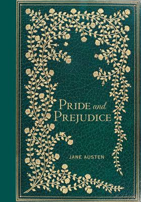
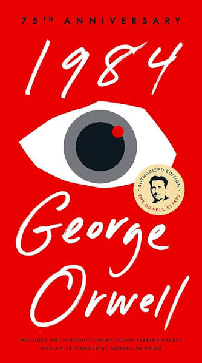
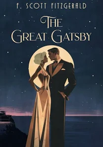
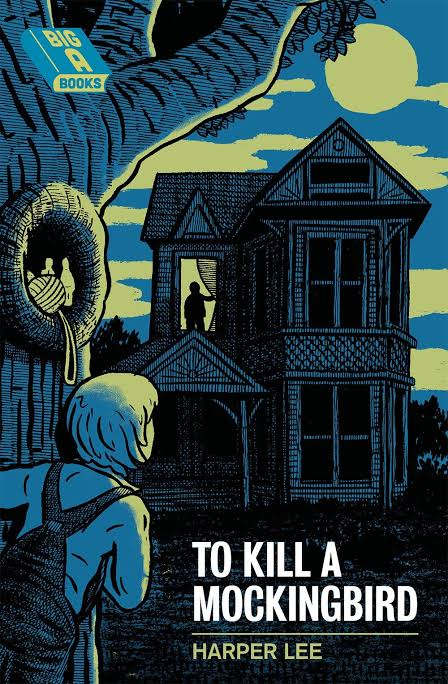
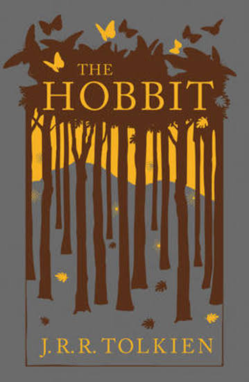

Pride and Prejudice
Author: Jane Austen
Year: 1813
Category: Romance / Classic Fiction
Rating: ⭐ 4.30/5 (Goodreads)
Pages: 352
This novel tells the story of Elizabeth Bennet and Mr. Darcy. It explores love, family, social class, and the importance of overcoming first impressions.
Read Book
1984
Author: George Orwell
Year: 1949
Category: Dystopian Fiction
Rating: ⭐ 4.21/5 (Goodreads)
Pages: 384
1984 is a dystopian novel about a society controlled by a powerful government. It follows Winston Smith as he questions the rules and searches for the truth.
Read Book
The Great Gatsby
Author: F. Scott Fitzgerald
Year: 1925
Category: Classic Fiction
Rating: ⭐ 3.92/5 (Goodreads)
Pages: 176
The story follows Jay Gatsby, a mysterious millionaire who dreams of winning back his former love. It explores wealth, ambition, love, and the American Dream.
Read Book
To Kill a Mockingbird
Author: Harper Lee
Year: 1960
Category: Classic Fiction
Rating: ⭐ 4.26/5 (Goodreads)
Pages: 336
Set in a small American town, this novel follows Scout Finch as she learns about justice, kindness, prejudice, and courage through her father's experiences.
Read book
The Hobbit
Author: J. R. R. Tolkien
Year: 1937
Category: Fantasy Fiction
Rating: ⭐ 4.30/5 (Goodreads)
Pages: 320
The Hobbit follows Bilbo Baggins on an unexpected adventure with a group of dwarves. Their journey is filled with challenges, friendship, and discovery.
Read book